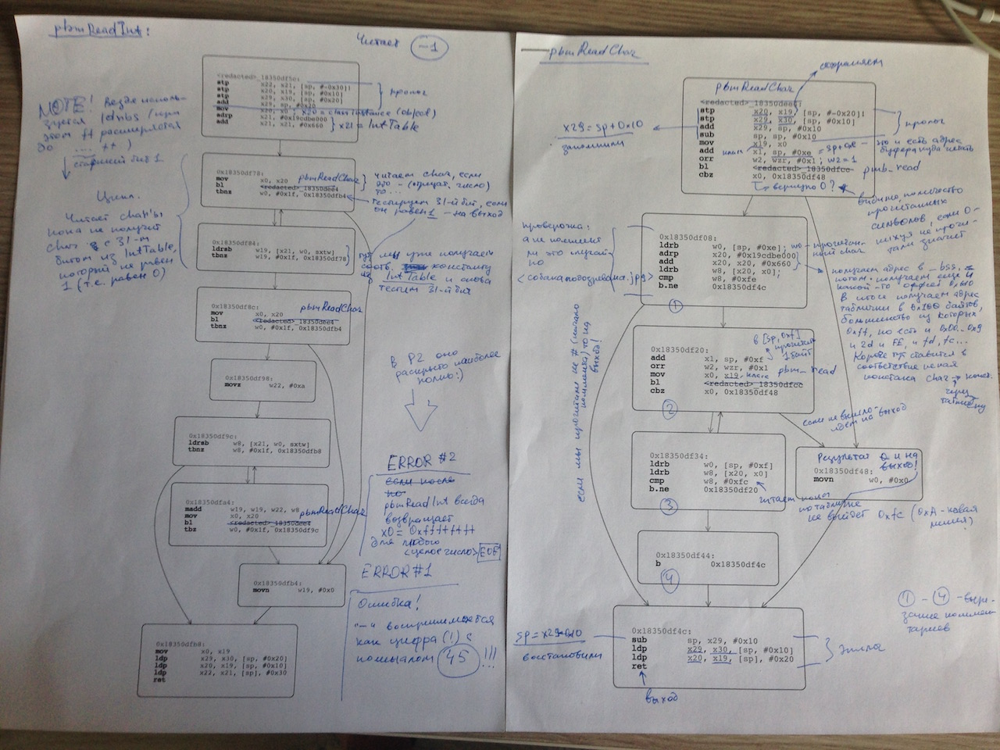
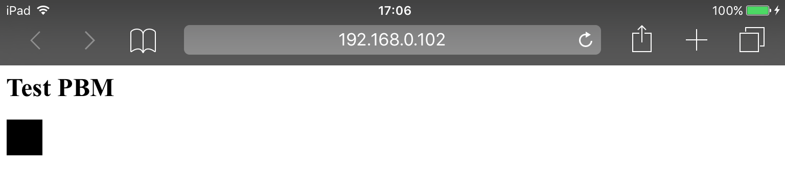

Error-based image format from Apple
The research is kind of a geek joke for reverse engineers, please don’t take it seriously.
A quick word on Netpbm image formats
Netpbm formats are quite old image formats developed in the 1980s. However, the latest Safari browsers (Safari 9.1.1 on Mac and MobileSafari on iOS 9.x) still support them.
Here is a test example for your browser:
If you see a small (24x7 pixels) “FEEP” above, your browser supports Netpbm formats. If you see nothing, try to open this page with a desktop Safari on Mac or MobileSafari on iOS 9.x.
UPDATE from Dec 10, 2017: The PBM image is not visible in the latest desktop/mobile Safari anymore. Maybe they canceled PBM support (it would be a smart move, BTW). ■
Netpbm image is a text file with .pbm extension. I’ll not describe Netpbm formats in details, they are plaintext and quite simple. Please take 5 min to read the Netpbm format article in Wikipedia.
pbmReadInt(...)
Let’s consider a simple portable graymap image file:
P2 # a portable graymap image should start with P2
1 1 # image weigh and height (it's 1x1)
1 # maximum of grey between black and white
0 # the only pixel, it's black
The image is 1x1, the only pixel is black. MobileSafari on iOS 9.x process the image as follows:
- The browser detects image type by calling
ImageIO:_CGImagePluginIdentifyPBM(...) - Then it calls
ImageIO:_CGImagePluginInitPBM(...)to detect the exact image type (it readsP2at the beginning of the file) and read its weigh, height, and a maximum of grey between black and white. - Finally,
ImageIO:copyImageBlockSetPBM(...)is called to read the image pixel array (in our case, the only element in the array is0).
Note! If you wanna see the calls, open MobileSafari, open a tab, attach your debugger to a newly started com.apple.WebKit.WebContent process and breakpoint
ImageIO:_CGImagePluginIdentifyPBM
ImageIO:_CGImagePluginInitPBM
ImageIO:copyImageBlockSetPBM
I’d recommend to use a jailbroken iOS 9.x device with LLDB. ■
As you see it, it was needed to read some integers, separated by spaces/tabs/newlines, from a plain text to parse the .pbm file above. So Apple designed a class, which represents a .pbm image file. The ImageIO binary does not contain symbols, therefore let’s call the class PBMFileObject. The class has a dedicated method to read integers from a plain text. The method is ImageIO:pbmReadInt(...), its prototype looks like
unsigned int32 PBMFileObject::pbmReadInt()
Every time we call pbmReadInt(...), it returns the next integer from a .pbm file. The method contains a funny error.
The error: a - char is a digit 45
The pbmReadInt(...) in iOS 9.x implements a (very primitive) finite-state machine. It’s based in the following table of 256 bytes (here is a memory dump from LLDB console on my iPad mini 2):
(lldb) mem read $x8 -c 0x100
0x19db6e660: ff ff ff ff ff ff ff ff ff fd fc ff ff fd ff ff ????????????????
0x19db6e670: ff ff ff ff ff ff ff ff ff ff ff ff ff ff ff ff ????????????????
0x19db6e680: fd ff ff fe ff ff ff ff ff ff ff ff ff 2d ff ff ?????????????-??
0x19db6e690: 00 01 02 03 04 05 06 07 08 09 ff ff ff ff ff ff ..........??????
0x19db6e6a0: ff ff ff ff ff ff ff ff ff ff ff ff ff ff ff ff ????????????????
0x19db6e6b0: ff ff ff ff ff ff ff ff ff ff ff ff ff ff ff ff ????????????????
0x19db6e6c0: ff ff ff ff ff ff ff ff ff ff ff ff ff ff ff ff ????????????????
0x19db6e6d0: ff ff ff ff ff ff ff ff ff ff ff ff ff ff ff ff ????????????????
0x19db6e6e0: ff ff ff ff ff ff ff ff ff ff ff ff ff ff ff ff ????????????????
0x19db6e6f0: ff ff ff ff ff ff ff ff ff ff ff ff ff ff ff ff ????????????????
0x19db6e700: ff ff ff ff ff ff ff ff ff ff ff ff ff ff ff ff ????????????????
0x19db6e710: ff ff ff ff ff ff ff ff ff ff ff ff ff ff ff ff ????????????????
0x19db6e720: ff ff ff ff ff ff ff ff ff ff ff ff ff ff ff ff ????????????????
0x19db6e730: ff ff ff ff ff ff ff ff ff ff ff ff ff ff ff ff ????????????????
0x19db6e740: ff ff ff ff ff ff ff ff ff ff ff ff ff ff ff ff ????????????????
0x19db6e750: ff ff ff ff ff ff ff ff ff ff ff ff ff ff ff ff ????????????????
In the binary, the table is called as IntTable. If we apply IntTable to a usual ASCII/ANSI table, we get
ANSCII/ANSI code Byte from the table
----------------- -------------------
00 NUL ff
01 STX ff
02 SOT ff
03 ETX ff
04 EOT ff
05 ENQ ff
06 ACK ff
07 BEL ff
08 BS ff
09 HT fd
0A LF fc
0B VT ff
0C FF ff
0D CR fd
0E SO ff
0F SI ff
10 DLE ff
11 DC1 ff
12 DC2 ff
13 DC3 ff
14 DC4 ff
15 NAK ff
16 SYN ff
17 ETB ff
18 CAN ff
19 EM ff
1A SUB ff
1B ESC ff
1C FS ff
1D GS ff
1E RS ff
1F US ff
20 [Space] fd
21 ! ff
22 " ff
23 # fe
24 $ ff
25 % ff
26 & ff
27 ' ff
28 ( ff
29 ) ff
2A * ff
2B + ff
2C , ff
2D - 2d
2E . ff
2F / ff
30 0 00
31 1 01
32 2 02
33 3 03
34 4 04
35 5 05
36 6 06
37 7 07
38 8 08
39 9 09
3A : ff
3B ; ff
3C < ff
3D = ff
3E > ff
3F ? ff
40 @ ff
...all remaining ASCII/ANSI codes are ff
In fact, the table above marks ASCII/ANSI codes:
; Separators:
fd: 09 (Tab)
13 (Return)
20 (Space)
; Comments:
fe: 23 (#) ; start comment
; New line
fc: 0A (New line) ; a new line (also, it's end of a comment)
; A minus (note it, it's important!)
2d: 2d (-)
; Digits:
00-09: 0-9 (decimal digits from zero to nine)
; Shouldn't happen outside comments:
ff: ...
pbmReadInt(...) does the job as follows, step by step:
At the very beginning, set the result to
0.Call
ImageIO::pbmReadChar(...)to read a single char from a.pbmfile.
Note! pbmReadChar(...) reads the char, then check the IntTable. If the char code is fe (it’s a comment start #), pbmReadChar(...) start reading next chars one by one. pbmReadChar(...) checks char codes in IntTable and just skips the chars until fc is faced (a new line, end of the comment). So pbmReadChar(...) always skips comments. ■
Use
IntTableto check the char:for
fdorfc:- if the previous char was not a digit, just skip it and read next char (go to the previous step)
- if the previous char was a digit, exit
pbmReadInt(...)and return the result
ff, something goes wrong, the char should not appear outside a comment,pbmReadInt(...)exits with error code0xffffffff.00…09is a digit (00is “zero”,01is “one”, etc). Go to the next step.2d(a “minus” char) is also… a digit! It’s stupid, but anyway go to the next step.
If the char is a digit (a “minus” char is also considered as a digit), use
IntTableto transform char to an integer:- for
0x30,0x31, …,0x39ASCII chars we have0,1, …,9correspondignly - for
0x2dASCII char we have… the integer45!
Then add the integer to the result
<result> = <result> * 10 + <the integer>and go to step 2.
- for
Note! I’ve explained the pbmReadInt(...) code logic in a (more or less) simple way. I made no references to pbmReadInt(...) machine code at all, but reversing the code took some time for me :)

■
As we see it, pbmReadInt(...) considers the - char as a digit of value 45. Obviously, it’s an error, but… why don’t we use it for fun? :)
The Portable Bitmap Minus format
Ok, what if we use only “munis” chars in .pbm file? No decimal digits, no comments, no newlines, but only “munises” and spaces. To be more precise:
- A
.pbmfile starts withP2 - Further, the file format is the same as the portable graymap format, but we only allowed to use
-and spaces. - As result, we can use only
45-based integers:-is45,--is45+45*10=495,---is45+45*10+45*100=4995etc. - The results should be viewed with MobileSafari on iOS 9.x device :)
I’d call such error-based format a “Portable Bitmap Minus” format, he-he… :)
Ok, let’s try! Here is (probably, the simplest) example test.pbm. Here is a black square 45x45 pixels:
P2 - - - -
Insert the image in HTML page
<html>
<head><title>Test exotic formats</title></head>
<body>
<h1>Test PBM</h1>
<img src="test.pbm">
</body>
</html>
and load with MobileSafari. It looks like:

Well, it works! We see a black square. Malevich should be proud :) I’d like to draw something more beautiful that just a black square, but I’m a crappy artist.
So it goes.
P.S. If I try to open the black-square example above in my desktop Safari, it stuck and stop responding… :) It wold be interesting to look inside pbmReadInt on desktop. Ha-ha!..
Wanna say something?
Commenting is not available in this blog, but you can write me a letter or message.
Prev: Disassembling iOS system frameworks and libs with HopperNext: Bypassing TicketMaster 1.23.0 jailbreak detection